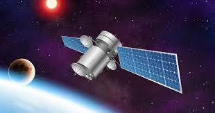

TECHNOLOGY
Definition
Technology is the application of scientific knowledge for practical purposes, especially in industry.
or advances in computer technology.
Scientific knowledge is the information concerning different aspects of the natural world.Science is based on empirical evidence.
Empirical evidence is defined as information (to support or refute a theory) supported by scientific experimentation or statistical analysis, involving testable observations made using the physical senses or using instruments which extend the senses.
It has no absolute truth as it keeps on changing on the rise of new evidence.
Some of the instruments which enable scientific technology include the following;

fig1. Satellite in orbit
 fig2. Satellite dish
fig3 Smartphone
fig2. Satellite dish
fig3 Smartphone
Smartphones
A smartphone is an electronic device which runs on stored applications in order to accomplish tasks.
It is used in mobile communication as it sends and receives radio frequency signals which are amplified by the cell towers.
The name smart comes from its capabilities which indeed are complex but to the user it seems like a magic trick.
The smartphone has different parts such as :camera,battery,speaker,RAM,ROM etc.
satellite
A satellite in the context of spaceflight, a satellite is an object that has been intentionally placed into orbit. These objects are called artificial satellites to distinguish them from natural satellites such as Earth's Moon. On 4 October 1957, the Soviet Union launched the world's first artificial satellite, Sputnik 1
Satellite
Clock speed
In a smartphone or computer, clock speed refers to the number of pulses per second generated by an oscillator that sets the tempo for the processor .
The higher the speed of the clock the higher the speed at which the processor manipulates data.
The speed of the system clock is measured in units called Hertz(Hz) or (/S).
Clock rate
Processor
The processor is the "brain" of a device. It's what handles the instructions of software apps. All phones have a processor of some kind. it may be integrated into the main cell phone chip, or be a separate computer chip. A better and/or faster processor allows apps to run faster.
Processor
Resolution
Resolution refers to the number of pixels on display or in a camera sensor. Higher resolution means more pixels, which provides the ability to capture or display more visual information
Resolution
DAC AND ADC
In electronics, an analog-to-digital converter (ADC, A/D, or A-to-D) is a system that converts an analog signal, such as a sound picked up by a microphone or light entering a digital camera, into a digital signal. An ADC may also provide an isolated measurement such as an electronic device that converts an analog input voltage or current to a digital number representing the magnitude of the voltage or current. Typically the digital output is a two's complement binary number that is proportional to the input, but there are other possibilities.
In electronics, a digital-to-analog converter (DAC, D/A, D2A, or D-to-A) is a system that converts a digital signal into an analog signal.
This can be seen in the mobile communication whereby data is transferred virtually in digital form then converted into analog signals at the receiver.
The speaker for example is able to reproduce an analog signal from a digital signal.
Analog to digital converter
Digital to analog converter
FEATURES OF DIFFERENT MOBILES
| Mobile phone |
Clock speed |
Processor |
Resolution |
| Tecno Camon17 |
2x2.0GHz & 6x1.8GHz |
MTK G85 Octacore |
1080x2460 pixels |
| Infinix note 10 |
2x2.0GHz
6x1.7GHz |
Octacore
Cortex-A75 & Cortex-A55 |
720x1640 pixels |
| Samsung A32 |
2x2.0GHz
2x2.0GHz
6x2.0 GHz |
Octacore
Cortex-A55 & Cortex-A76 |
1080x2400 pixels |
From the table above different types of phones use different or almost similar features.
The rise in technology make companies to compete in order to have the biggest share of the market.
This has led to intense development and improvement of their features.This includes:improvement of camera capabilities ie Megapixels,processor speed ,the resolution to give clearer images ,improvement of the battery capacity,expanding internal storage capacity etc.